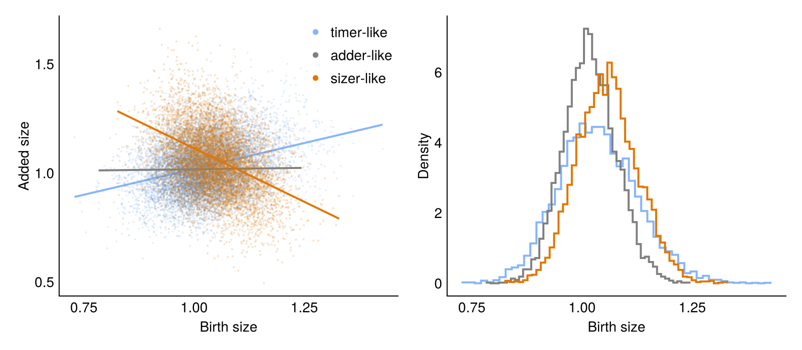

Threshold-Triggered Division
This model is based on ElGamel & Mugler, "Effects of molecular noise on cell size control", Phys. Rev. Lett. (2024).
Cells grow exponentially and divide once a molecule x reaches a threshold. The molecule is produced at rate ν + μV, where V is the cell volume, and degraded at rate λ. Depending on these rates, this can result in cells that behave like timers, adders or sizers.
The model
using Catalyst
rn = @reaction_network begin
@species x(t)
@variables V(t)
@parameters α ν μ λ N
ν + μ * V, 0 --> x
λ, x --> 0
@equations begin
D(V) ~ α * V
end
endModel ##ReactionSystem#152:
Unknowns (2): see unknowns(##ReactionSystem#152)
x(t)
V(t)
Parameters (5): see parameters(##ReactionSystem#152)
α
ν
μ
λ
NDivision
The cell divides once x reaches the threshold N. At division, the volume is halved and each daughter starts with N / 2 molecules.
using Chemostats
using Chemostats: Offspring, ExactPartition
N = 200 # threshold
cb_div = Chemostats.DivideCallback(rn.x ~ rn.N; discrete = true)
divide_cell = Offspring(2, :V => ExactPartition(), :x => N / 2);We tell Chemostats to record the birth and division size of each cell by overriding Chemostats.get_data:
function Chemostats.get_data(cell::DECell{I,typeof(divide_cell)}) where {I}
V = cell.int.sol[:V]
(V_b = V[1], V_d = V[end])
end;We create a HybridProblem to simulate the cells. The volume V follows an ODE, and x changes by jumps. VR_Direct assumes that time starts at 0, so each cell runs on its own clock (reset_t = true).
using OrdinaryDiffEqTsit5
using JumpProcesses
function create_population(rates, L)
p = [ :α => 1.0, :ν => rates.ν, :μ => rates.μ, :λ => rates.λ, :N => N ]
u0 = [ :V => 1.0, :x => N / 2 ]
prob = HybridProblem(rn, u0, (0., Inf), p; callback = cb_div, vr_aggregator = VR_Direct(),
save_positions = (false, false))
[ DECell(prob, Tsit5(), divide_cell; reset_t = true) for _ in 1:L ]
end;Simulation
We simulate L lineages using Chemostats.Forward for three choices of rates, and compute the noise in the birth size.
using StatsBase
regimes = [ "timer-like" => (ν = 80.0, μ = 44.0, λ = 0.01),
"adder-like" => (ν = 2.0, μ = 98.0, λ = 0.01),
"sizer-like" => (ν = 2.0, μ = 1000.0, λ = 10.0) ]
L = 50
tmax = 100.0
t_burn = 20.0
# Birth and division sizes of the cells that divided after the burn-in
function cell_sizes(rates)
chem = Chemostats.simulate(create_population(rates, L), tmax, Chemostats.Forward(L);
save_mode = :full)
[ node.data for node in values(chem.tree) if node.t_birth >= t_burn && !node.alive ]
end
sizes = [ cell_sizes(rates) for (name, rates) in regimes ]
births = [ [ s.V_b for s in sz ] for sz in sizes ]
noise = [ name => var(b) / mean(b)^2 for ((name, rates), b) in zip(regimes, births) ]3-element Vector{Pair{String, Float64}}:
"timer-like" => 0.0075209936314706355
"adder-like" => 0.0035145129874554135
"sizer-like" => 0.00427353414203684Results
Plotting code
using CairoMakie
set_theme!(theme_minimal())
colors = [ colorant"#85b5fb", :gray, colorant"#e07700" ]
fig = Figure(size = (800, 350))
ax = Axis(fig[1, 1]; xlabel = "Birth size", ylabel = "Added size")
ax2 = Axis(fig[1, 2]; xlabel = "Birth size", ylabel = "Density")
for ((name, rates), sz, color) in zip(regimes, sizes, colors)
V_b = [ s.V_b for s in sz ]
ΔV = [ s.V_d - s.V_b for s in sz ]
slope = cov(V_b, ΔV) / var(V_b)
xs = collect(extrema(V_b))
scatter!(ax, V_b, ΔV; color = (color, 0.2), markersize = 3, label = name => (; markersize = 8, color))
lines!(ax, xs, mean(ΔV) .+ slope .* (xs .- mean(V_b)); color, linewidth = 2)
stephist!(ax2, V_b; bins = 50, normalization = :pdf, color, linewidth = 2)
end
axislegend(ax; position = :rt);
This page was generated using Literate.jl.